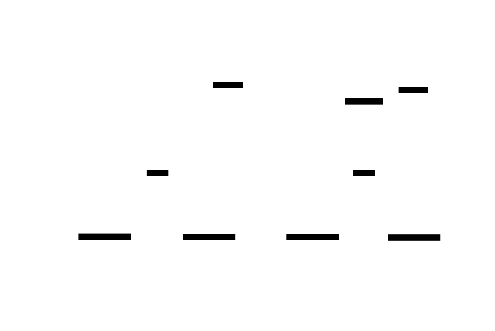

Property API Reference¶
New to property-based testing? Start with the Walkthrough for a step-by-step guide to creating your first property test. This page provides the complete API reference.
Overview¶
cppproptest provides a property-based testing framework where you define properties (invariants) that should hold for all inputs in a domain, rather than testing specific examples. The framework automatically generates random inputs and verifies your properties.

Quick Reference¶
Functions¶
| Function | Description | Returns |
|---|---|---|
proptest::property(callable, ...generators) |
Create a Property object from a callable |
Property |
proptest::forAll(callable, ...) |
Create and run a property immediately | Property |
proptest::matrix(callable, ...lists) |
Create and run a matrix test immediately | Property |
Property Class Methods¶
| Method | Description | Returns |
|---|---|---|
.forAll(...generators) |
Run property with random inputs | Property |
.example(...args) |
Run property with specific inputs | Property |
.matrix(...lists) |
Run property with Cartesian product of inputs | Property |
See Chaining for immutable chaining, failure propagation, short-circuiting, and config preservation.
Configuration Methods¶
All configuration methods return a reference to Property, allowing method chaining.
| Method | Description | Parameters |
|---|---|---|
.setSeed(seed) |
Set random seed for reproducibility | uint64_t seed |
.setNumRuns(runs) |
Set number of test runs | uint32_t runs (default: 1000) |
.setMaxDurationMs(duration) |
Set maximum test duration in milliseconds | uint32_t durationMs |
.setOnStartup(callback) |
Set callback called before each test run | Function<void()> callback |
.setOnCleanup(callback) |
Set callback called after each test run | Function<void()> callback |
.setConfig(config) |
Configure multiple options at once | ForAllConfig (designated initializers) |
Macros¶
Assertion Macros¶
| Macro | Type | Description |
|---|---|---|
PROP_ASSERT_EQ(A, B) |
Fatal | Assert equality |
PROP_ASSERT_NE(A, B) |
Fatal | Assert not equal |
PROP_ASSERT_LT(A, B) |
Fatal | Assert less than |
PROP_ASSERT_LE(A, B) |
Fatal | Assert less than or equal |
PROP_ASSERT_GT(A, B) |
Fatal | Assert greater than |
PROP_ASSERT_GE(A, B) |
Fatal | Assert greater than or equal |
PROP_EXPECT_EQ(A, B) |
Non-fatal | Expect equality (continues on failure) |
PROP_EXPECT_NE(A, B) |
Non-fatal | Expect not equal |
PROP_EXPECT_LT(A, B) |
Non-fatal | Expect less than |
PROP_EXPECT_LE(A, B) |
Non-fatal | Expect less than or equal |
PROP_EXPECT_GT(A, B) |
Non-fatal | Expect greater than |
PROP_EXPECT_GE(A, B) |
Non-fatal | Expect greater than or equal |
Statistics and Tagging Macros¶
| Macro | Description |
|---|---|
PROP_STAT(expr) |
Collect statistics about expression values |
PROP_TAG(key, value) |
Categorize test cases with custom labels |
PROP_CLASSIFY(cond, key, value) |
Conditionally tag test cases |
PROP_STAT_ASSERT_GE(expr, bound) |
Assert ratio of expr true ≥ bound (0–1) |
PROP_STAT_ASSERT_LE(expr, bound) |
Assert ratio of expr true ≤ bound (0–1) |
PROP_STAT_ASSERT_IN_RANGE(expr, min, max) |
Assert ratio of expr true in [min, max] |
Test Control Macros¶
| Macro | Description |
|---|---|
PROP_DISCARD() |
Skip current test iteration (input doesn't meet preconditions) |
PROP_SUCCESS() |
Mark current test iteration as passed and skip remaining checks |
Google Test Integration Macros¶
| Macro | Description |
|---|---|
EXPECT_FOR_ALL(...) |
Run forAll() with EXPECT_TRUE (non-fatal) |
ASSERT_FOR_ALL(...) |
Run forAll() with ASSERT_TRUE (fatal) |
EXPECT_MATRIX(...) |
Run matrix() with EXPECT_TRUE (non-fatal) |
ASSERT_MATRIX(...) |
Run matrix() with ASSERT_TRUE (fatal) |
Functions¶
proptest::property(callable, ...generators)¶
Creates a Property object from a callable (function, functor, or lambda).
Parameters:
callable: A callable that defines the property. Can returnboolorvoid(using assertions)....generators: Optional generators for property parameters. If not provided, uses default generators (Arbi<T>) for each parameter type.
Returns: Property object
Example:
auto prop = property([](int a, int b) -> bool {
return a + b == b + a;
});
// With custom generators
auto prop2 = property([](int a, int b) -> bool {
return a + b == b + a;
}, gen::interval(0, 100), gen::interval(0, 100));
See also: Generators, Arbitrary, Custom Generator
Chaining¶
proptest::property(), proptest::forAll(), proptest::matrix(), return Property objects. The run methods (.forAll(), .example(), .matrix()) also return Property, enabling fluent chaining. Chaining lets you to test various subdomains for a property in one go:
// Chain run methods
EXPECT_TRUE(property([](int a, int b) { return a + b == b + a; })
.forAll(gen::interval(0, 10))
.matrix({1, 2}, {3, 4})
.example(5, 6));
// Chain free functions
EXPECT_TRUE(forAll([](int x) { return x >= 0; }, gen::interval(0, 100)).example(42));
// Config flows through the chain
prop.setSeed(0).setNumRuns(10).forAll().example(42);
Behavior:
| Aspect | Description |
|---|---|
| Immutable | Each step returns a copy; the original is unchanged. p1.example(5); p1.example(6); — each call uses the same p1. |
| Failure propagates | Once a step fails, later steps cannot overturn it. |
| Short-circuiting | When a step fails, subsequent steps are skipped (no execution). |
| Configuration preserved | setSeed, setNumRuns, etc. flow through the chain. |
proptest::forAll(callable, ...)¶
Shorthand for property(callable).forAll(). Creates and immediately runs a property test.
Parameters:
callable: A callable that defines the property...: Optional configuration (C++20 designated initializers) and/or generators
Returns: Property - for chaining (e.g. forAll(...).example(42)). Also provides operator bool() for test result.
Example:
// Simple usage
forAll([](int a, int b) -> bool {
return a + b == b + a;
});
// With configuration
forAll([](int a, int b) -> bool {
return a + b == b + a;
}, {
.seed = 12345,
.numRuns = 500
});
// With generators
forAll([](int a, int b) -> bool {
return a + b == b + a;
}, gen::interval(0, 100), gen::interval(0, 100));
// Chainable: forAll().example(...)
EXPECT_TRUE(forAll([](int x) -> bool { return x >= 0; }, gen::interval(0, 100)).example(42));
proptest::matrix(callable, ...lists)¶
Shorthand for property(callable).matrix(...). Creates and immediately runs a matrix test (Cartesian product).
Parameters:
callable: A callable that defines the property...lists:initializer_listfor each parameter, representing all values to test
Returns: Property - for chaining (e.g. matrix(...).example(42)).
Example:
matrix([](int a, int b) -> bool {
return a + b == b + a;
}, {1, 2, 3}, {4, 5, 6});
Property Class¶
The Property class represents a property test with configurable execution options.
Property::forAll(...generators)¶
Runs the property with randomly generated inputs.
Parameters:
...generators: Optional generators to override or supplement those specified at property creation
Returns: Property copy with accumulated test result (immutable; original unchanged).
Example:
auto prop = property([](int a, int b) -> bool {
return a + b == b + a;
});
prop.forAll(); // Use default generators
prop.forAll(gen::interval(0, 100), gen::interval(0, 100)); // Override generators
// Chainable: forAll().matrix().example() — returns new Property
EXPECT_TRUE(prop.forAll().matrix({1, 2}, {3, 4}).example(5, 6));
See also: Testing a Property, Configuring test runs
Property::example(...args)¶
Runs the property once with specific input values.
Parameters:
...args: Arguments matching the property function's parameters
Returns: Property copy with accumulated test result (immutable; original unchanged).
Example:
auto prop = property([](int a, int b) -> bool {
return a + b == b + a;
});
prop.example(5, 10);
prop.example(INT_MIN, INT_MAX); // Independent of previous call
EXPECT_TRUE(prop.forAll().example(42)); // Chaining and bool coercion
Property::matrix(...lists)¶
Runs the property for all combinations of input values (Cartesian product).
Parameters:
...lists:initializer_listfor each parameter
Returns: Property copy with accumulated test result (immutable; original unchanged).
Example:
auto prop = property([](int a, int b) -> bool {
return a + b == b + a;
});
// Tests all 9 combinations: (1,4), (1,5), (1,6), (2,4), (2,5), (2,6), (3,4), (3,5), (3,6)
EXPECT_TRUE(prop.matrix({1, 2, 3}, {4, 5, 6}));
Property::operator bool()¶
Returns the accumulated test result. Enables EXPECT_TRUE(prop.forAll()) and if (forAll(...)) via implicit conversion. Used on the returned Property from forAll/example/matrix. Failure propagates: once any step fails, later steps cannot overturn it and are skipped (no execution). Configuration preserved: setSeed, setNumRuns, etc. flow through the chain (each step returns a copy that includes the config).
Configuration¶
All configuration methods return a reference to Property, allowing method chaining.
Property::setSeed(seed)¶
Sets the random seed for test execution. Useful for reproducibility.
Parameters:
seed:uint64_t- Random seed value
Returns: Property&
Example:
prop.setSeed(12345).forAll();
Note: If no seed is specified, current timestamp in milliseconds is used. You can also set it via environment variable PROPTEST_SEED.
Property::setNumRuns(runs)¶
Sets the number of test runs to execute.
Parameters:
runs:uint32_t- Number of runs (default: 1000)
Returns: Property&
Example:
prop.setNumRuns(500).forAll();
Note: You can set a global default using PropertyBase::setDefaultNumRuns(num).
Property::setMaxDurationMs(duration)¶
Sets the maximum duration for test execution in milliseconds. Test stops when either the number of runs or duration limit is reached (whichever comes first).
Parameters:
duration:uint32_t- Maximum duration in milliseconds
Returns: Property&
Example:
prop.setMaxDurationMs(5000).forAll(); // Run for at most 5 seconds
Property::setOnStartup(callback)¶
Sets a callback function called before each test run.
Parameters:
callback:Function<void()>- Callback function
Returns: Property&
Example:
prop.setOnStartup([]() {
std::cout << "Starting test run" << std::endl;
}).forAll();
Property::setOnCleanup(callback)¶
Sets a callback function called after each test run.
Parameters:
callback:Function<void()>- Callback function
Returns: Property&
Example:
prop.setOnCleanup([]() {
std::cout << "Test run complete" << std::endl;
}).forAll();
Property::setConfig(config)¶
Configures multiple options at once using designated initializers.
Parameters:
config:ForAllConfig- Configuration struct with optional fields:.seed:uint64_t.numRuns:uint32_t.maxDurationMs:uint32_t.onStartup:Function<void()>.onCleanup:Function<void()>
Returns: Property&
Example:
prop.setConfig({
.seed = 12345,
.numRuns = 1000,
.maxDurationMs = 5000
}).forAll();
Note: All fields are optional. This is equivalent to chaining individual setters.
Assertion Macros¶
Assertion macros verify conditions within property functions. Fatal assertions (PROP_ASSERT_*) stop test execution on failure, while non-fatal expectations (PROP_EXPECT_*) continue testing.
Fatal Assertions:
PROP_ASSERT(condition)- Assert condition is truePROP_ASSERT_TRUE(condition)- Assert condition is truePROP_ASSERT_FALSE(condition)- Assert condition is falsePROP_ASSERT_EQ(A, B)- Assert equalityPROP_ASSERT_NE(A, B)- Assert not equalPROP_ASSERT_LT(A, B)- Assert less thanPROP_ASSERT_LE(A, B)- Assert less than or equalPROP_ASSERT_GT(A, B)- Assert greater thanPROP_ASSERT_GE(A, B)- Assert greater than or equalPROP_ASSERT_STREQ(A, B, N)- Assert string equality (first N characters)
Non-fatal Expectations:
PROP_EXPECT(condition)- Expect condition is truePROP_EXPECT_TRUE(condition)- Expect condition is truePROP_EXPECT_FALSE(condition)- Expect condition is falsePROP_EXPECT_EQ(A, B)- Expect equalityPROP_EXPECT_NE(A, B)- Expect not equalPROP_EXPECT_LT(A, B)- Expect less thanPROP_EXPECT_LE(A, B)- Expect less than or equalPROP_EXPECT_GT(A, B)- Expect greater thanPROP_EXPECT_GE(A, B)- Expect greater than or equalPROP_EXPECT_STREQ(A, B, N)- Expect string equality (first N characters)
Example:
forAll([](int a, int b) {
PROP_ASSERT_EQ(a + b, b + a); // Fatal - stops on failure
PROP_EXPECT_GE(a + b, a); // Non-fatal - continues on failure
});
See also: Test Control Macros
Statistics and Tagging Macros¶
PROP_STAT(expression)¶
Collects statistics about expression values. The expression is evaluated for each test run, and a summary is printed at the end showing the distribution of results.
Example:
forAll([](float f) {
PROP_STAT(std::isfinite(f));
PROP_STAT(f > 0);
PROP_STAT(f < 0);
}, gen::float32(0.05, 0.05, 0.05));
See also: Test Strategies
PROP_TAG(key, value)¶
Categorizes test cases with custom key-value pairs. Both key and value are expressions that are evaluated.
Example:
forAll([](int x) {
if (x < 0) {
PROP_TAG("sign", "negative");
} else if (x > 0) {
PROP_TAG("sign", "positive");
} else {
PROP_TAG("sign", "zero");
}
});
PROP_CLASSIFY(condition, key, value)¶
Convenience macro that conditionally applies a tag. Equivalent to if (condition) PROP_TAG(key, value).
Example:
forAll([](int x, int y) {
PROP_CLASSIFY(x == y, "relationship", "equal");
PROP_CLASSIFY(x > y, "relationship", "greater");
PROP_CLASSIFY(x < y, "relationship", "less");
});
Stat assertion macros¶
Assert that the ratio of runs where an expression is true falls within bounds. Bounds are ratios in [0, 1]. Assertions are evaluated after the main loop.
| Macro | Condition |
|---|---|
PROP_STAT_ASSERT_GE(expr, bound) |
ratio ≥ bound |
PROP_STAT_ASSERT_LE(expr, bound) |
ratio ≤ bound |
PROP_STAT_ASSERT_IN_RANGE(expr, min, max) |
min ≤ ratio ≤ max |
Failure output: When a stat assertion fails, the message includes the source location (file:line) for easy debugging, e.g.:
Stat assertion failed: PROP_STAT_ASSERT_GE(a > 0, 0.5) failed: ratio 0 < 0.5 (0/1000) (/path/to/test.cpp:42)
Example:
forAll([](int a) {
PROP_STAT_ASSERT_GE(a > 0, 0.5); // a > 0 case must be greater or equal to 50%
}, gen::interval(1, 100));
forAll([](int a) {
PROP_STAT_ASSERT_IN_RANGE(a > 0, 0.5, 1.0); // Ratio must be in [0.5, 1.0]
}, gen::interval(1, 100));
Test Control Macros¶
PROP_DISCARD()¶
Skips the current test iteration. The iteration doesn't count toward the total number of runs, and the test will generate additional inputs to meet the configured number of successful runs.
Use case: When generated inputs don't meet preconditions for your property test.
Example:
forAll([](int x, int y) {
if (y == 0) {
PROP_DISCARD(); // Skip division by zero cases
}
int result = x / y;
PROP_ASSERT(result * y <= x);
});
Note: If too many cases are discarded, consider using gen::filter() at the generator level instead. See Combinators.
PROP_SUCCESS()¶
Immediately marks the current test iteration as successful and skips any remaining assertions or checks in the property function.
Use case: Early exit for trivial cases that you know will pass, optimizing test execution time.
Example:
forAll([](int x, int y) {
if (x == 0 || y == 0) {
PROP_SUCCESS(); // Skip expensive checks for trivial cases
}
PROP_ASSERT(complexProperty(x, y));
});
Google Test Integration Macros¶
EXPECT_FOR_ALL(...)¶
Shorthand for EXPECT_TRUE(proptest::forAll(...)). Non-fatal - continues testing on failure.
Example:
TEST(Arithmetic, Commutativity)
{
EXPECT_FOR_ALL([](int a, int b) {
PROP_ASSERT_EQ(a + b, b + a);
});
}
ASSERT_FOR_ALL(...)¶
Shorthand for ASSERT_TRUE(proptest::forAll(...)). Fatal - stops test execution on failure.
Example:
TEST(Arithmetic, Commutativity)
{
ASSERT_FOR_ALL([](int a, int b) {
PROP_ASSERT_EQ(a + b, b + a);
});
}
EXPECT_MATRIX(...)¶
Shorthand for EXPECT_TRUE(proptest::matrix(...)). Takes a callable and initializer_list arguments (same as the matrix free function). Runs the property over the Cartesian product of the given lists. Non-fatal - continues testing on failure.
Example:
TEST(Arithmetic, MatrixExample)
{
EXPECT_MATRIX([](int a, int b) -> bool {
return a + b == b + a;
}, {1, 2, 3}, {4, 5, 6});
}
ASSERT_MATRIX(...)¶
Shorthand for ASSERT_TRUE(proptest::matrix(...)). Takes a callable and initializer_list arguments (same as the matrix free function). Runs the property over the Cartesian product of the given lists. Fatal - stops test execution on failure.
Example:
TEST(Arithmetic, MatrixExample)
{
ASSERT_MATRIX([](int a, int b) -> bool {
return a + b == b + a;
}, {1, 2, 3}, {4, 5, 6});
}
Usage Examples¶
Basic Property Test¶
#include "proptest/proptest.hpp"
#include <gtest/gtest.h>
using namespace proptest;
TEST(Arithmetic, AdditionIsCommutative)
{
forAll([](int a, int b) -> bool {
return a + b == b + a;
});
}
Using Assertions¶
TEST(Arithmetic, AdditionIsCommutativeWithAssertions)
{
forAll([](int a, int b) {
PROP_ASSERT_EQ(a + b, b + a);
});
}
Custom Generators¶
TEST(Arithmetic, AdditionWithCustomRange)
{
forAll([](int a, int b) {
PROP_ASSERT_EQ(a + b, b + a);
}, gen::interval(0, 100), gen::interval(0, 100));
}
Configuration¶
TEST(StringUtils, ReverseWithConfiguration)
{
auto prop = property([](const std::string& original) {
std::string reversed = reverseString(original);
std::string reversedTwice = reverseString(reversed);
PROP_ASSERT_EQ(original, reversedTwice);
});
prop.setNumRuns(500)
.setSeed(12345)
.setMaxDurationMs(5000)
.forAll();
}
Batch Configuration¶
TEST(StringUtils, ReverseWithBatchConfig)
{
auto prop = property([](const std::string& original) {
std::string reversed = reverseString(original);
std::string reversedTwice = reverseString(reversed);
PROP_ASSERT_EQ(original, reversedTwice);
});
prop.setConfig({
.seed = 12345,
.numRuns = 500,
.maxDurationMs = 5000
}).forAll();
}
Testing Specific Examples¶
TEST(StringUtils, ReverseEdgeCases)
{
auto prop = property([](const std::string& s) {
PROP_ASSERT_EQ(s.length(), reverseString(s).length());
});
prop.example("");
prop.example("a");
prop.example("hello world");
}
Matrix Testing¶
TEST(Arithmetic, BoundaryCases)
{
auto prop = property([](int a, int b) -> bool {
return a + b == b + a;
});
prop.matrix({INT_MIN, 0, INT_MAX}, {INT_MIN, 0, INT_MAX});
}
Statistics Collection¶
TEST(Statistics, InputDistribution)
{
forAll([](int value) {
PROP_STAT(value > 0);
PROP_STAT(value < 0);
PROP_STAT(value == 0);
PROP_TAG("magnitude", value > 100 ? "large" : "small");
PROP_ASSERT_GE(value * value, 0);
});
}
Discarding Invalid Inputs¶
TEST(Division, NonZeroDenominator)
{
forAll([](int x, int y) {
if (y == 0) {
PROP_DISCARD(); // Skip division by zero
}
int result = x / y;
PROP_ASSERT(result * y <= x);
});
}
Related Topics¶
- Walkthrough - Step-by-step guide to creating property tests
- Generators - Complete guide to input generators
- Arbitrary - Default generators for types
- Custom Generator - Creating generators for custom types
- Combinators - Combining and transforming generators
- Generator Examples - Real-world generator usage
- Shrinking - How counterexamples are simplified
- Test Strategies - Advanced testing techniques
- Stateful Testing - Testing state machines
- Concurrency Testing - Testing concurrent code